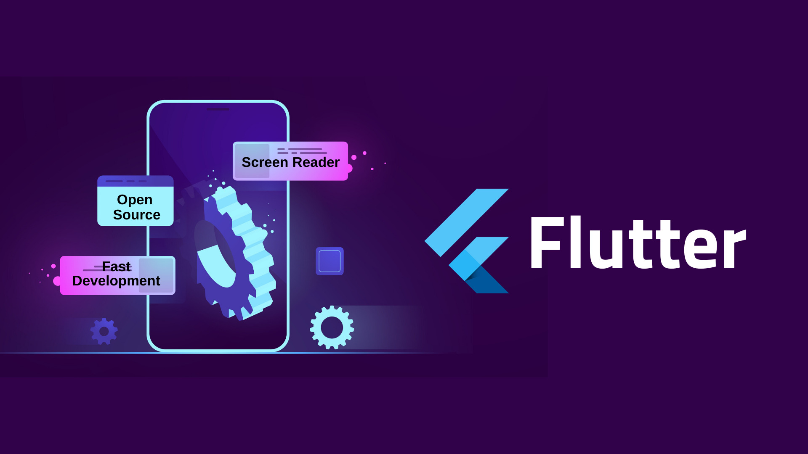

Belajar flutter

Apa itu flutter
Flutter adalah framework (kerangka kerja) open-source yang dikembangkan
oleh Google untuk membangun aplikasi mobile, web, dan desktop dari satu
basis kode. Dengan Flutter, Anda dapat membuat aplikasi yang terlihat
dan terasa seperti aplikasi asli (native) di berbagai platform, seperti
Android dan iOS, hanya dengan menggunakan satu bahasa pemrograman
komponen utama pada flutter
Dart: Flutter menggunakan bahasa pemrograman Dart. Dart adalah bahasa
yang dikembangkan oleh Google dan dirancang untuk pengembangan aplikasi
yang cepat dan efisien. Dengan Dart, Anda dapat menulis kode yang bersih
dan mudah dibaca. Widget: Di Flutter, hampir semuanya adalah widget.
Widget adalah komponen antarmuka pengguna yang dapat digunakan untuk
membangun tampilan aplikasi. Ada dua jenis widget: Stateless Widget:
Widget yang tidak memiliki status dan tidak berubah setelah dibuat.
Contoh: teks statis, gambar. Stateful Widget: Widget yang memiliki
status dan dapat berubah seiring waktu. Contoh: tombol yang dapat
ditekan, formulir input. Material Design dan Cupertino: Flutter
menyediakan dukungan untuk dua gaya desain utama: Material Design: Gaya
desain yang digunakan oleh Android. Cupertino: Gaya desain yang
digunakan oleh iOS.
↠Kembali ke Beranda